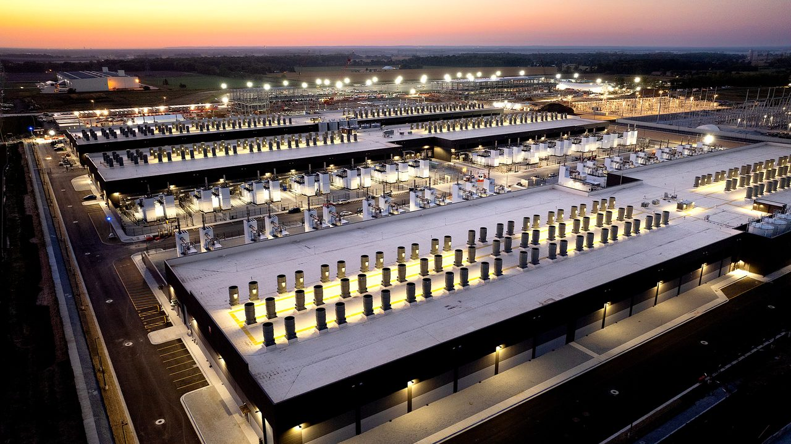
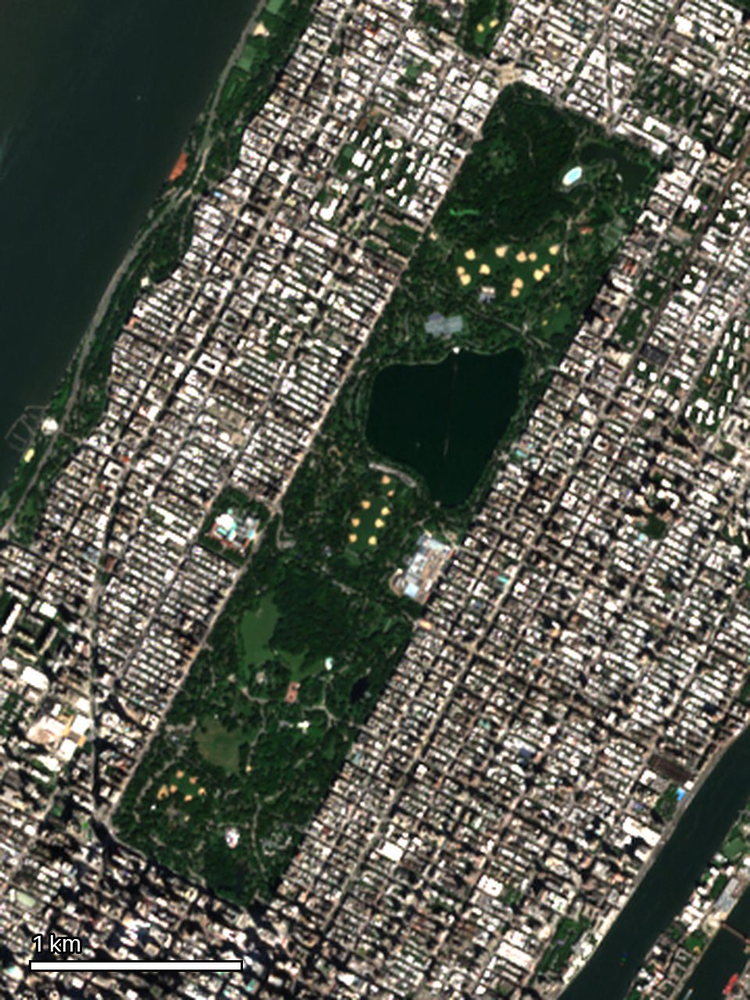
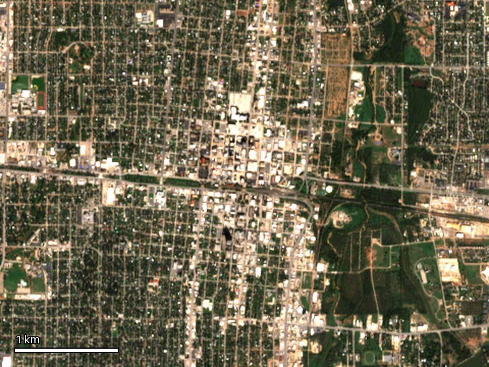
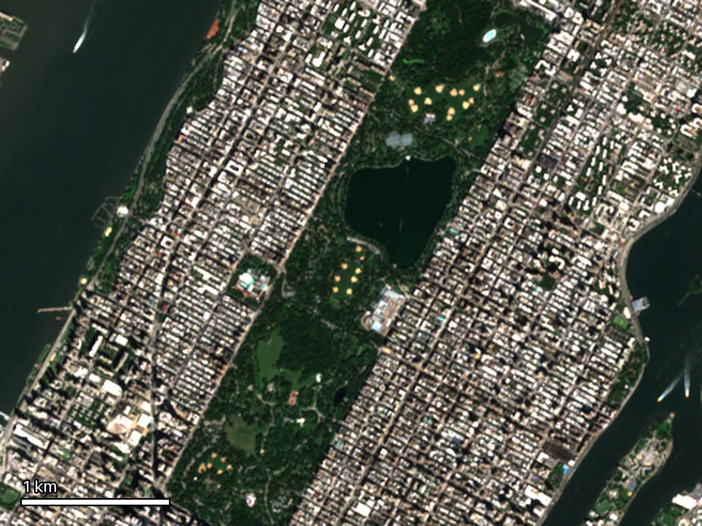
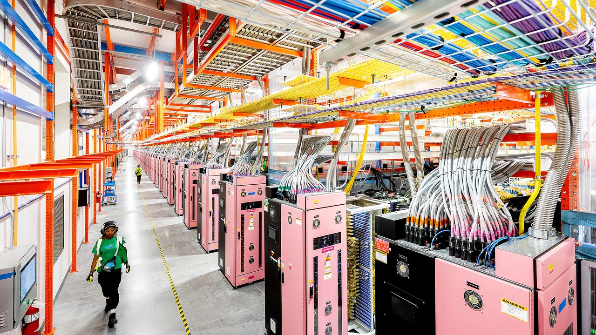
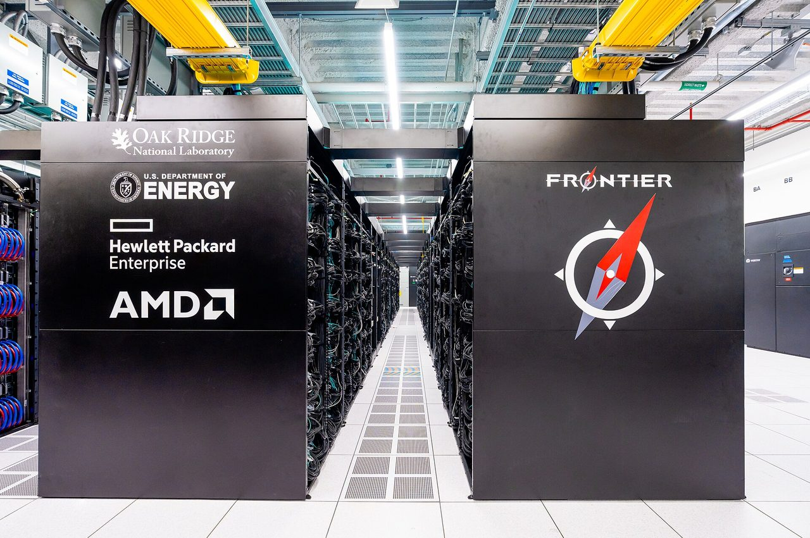
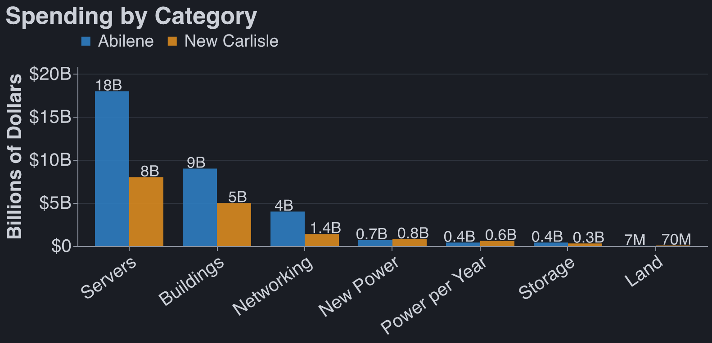

Giant Datacenters
★★★☆☆Published Last edited
In 2024 Leopold Aschenbrenner wrote Situational Awareness. He made the sci-fi prediction that in 2030 the AI labs would build a “trillion-dollar cluster.” We’re on track.
Anthropic’s biggest cluster costs $11B. It’s Project Rainier, in New Carlisle, Indiana.




- 4,000 people work at the site.
- Total of 89 acres of indoor floor space.
- Houses 1.6e21 flops, or 1.6 zettaflops (fp8). This is as many flops as the entire world had as of 2015.
- The cluster is ~30% of Anthropic’s total compute.
- The site uses 1.2 billion watts of power.

The story is largely the same in Abilene:
- 6,400 workers
- 92 acres of indoor space
- Houses 2e21 flops, or 2 zettaflops (fp8). This is as many flops as the entire world had as of 2015.
- The cluster is ~20% of OpenAI’s total compute.
- The site uses 1.2 billion watts of power.




New Carlisle is an AWS datacenter.[1] Notably, this means the site uses Trainium chips. My semi-professional opinion is that compute is fairly fungible these days: inference can run almost anywhere and most training is secretly inference via RL. The one thing you wouldn’t want to do at New Carlisle is a large pretraining run, which depends on hundreds of thousands of GPUs having very high-bandwidth connections to one another. I will not get into too many technical details here, but suffice it to say that one would prefer to do a frontier pretrain on TPUs or Nvidia GPUs over Trainiums. I speculate with low confidence that Anthropic pretrains at New Carlisle and finds a way to make Trainiums work, or pretrains at a Google Cloud datacenter on TPUs.
Abilene, meanwhile, houses almost entirely Nvidia GPUs (B200s and B300s), which one can use for almost anything.
The ownership structure of the site is a mess:
- Lancium (an energy startup, worth $10 billion) owns the land.
- Crusoe is the lead developer and landlord. They construct buildings, including a 360 MW gas plant for additional power capacity.
- Oracle buys the chips and builds the interior of the datacenter (eg the networking, cooling, etc.)
OpenAI didn’t have good enough credit to own the land or chips outright, which is why other firms, especially Oracle, own the chips themselves.


A datacenter is much more than just GPUs.
- Hundreds of thousands of miles of fiber-optic cable, enough to wrap around the world tens of times.
- Abilene has liquid cooling piped to every chip. AWS’s Trainium chips do not require this; the datacenter is air-cooled.
- Security: MFA had entry points and a perimeter all that would stop a fully-loaded 18-wheeler at Abilene.
- Exabytes (10^18 bytes) of storage. For context, global storage capacity is about 10^22 bytes, making these sites tens of bps of global capacity.

Abilene is a town of 130,000, of which the datacenter employs only 6,000. The rest of Taylor County has GDP $10 billion, compared to $12 billion in annual datacenter-related spend.
Crusoe did manage to get a tremendously good deal on the taxes they owe: they got an 85% discount on property taxes (from $150 million down to $22 million). In addition, Texas has a statewide exemption on sales taxes for datacenters, saving Abilene $1.4 billion.
New Carlisle, Indiana
New Carlisle is in St. Joseph County, with annual GDP $19.5 billion compared to datacenter spend of $4 billion a year. The AWS campus employs 900 people of 270k county residents.
In 2025 the town voted 4-0 against a new datacenter adjacent to the existing site. Expanding the existing site is blocked on state permitting.
Photo credits: the New Carlisle aerial and data hall photos are by Amazon, and the Abilene aerials are by Crusoe and OpenAI. The satellite images contain modified Copernicus Sentinel data 2026. The supercomputer aisle is Frontier at Oak Ridge National Laboratory, by OLCF at ORNL, CC BY 2.0.
Notes #
Anthropic agreed to spend at least $110B on AWS services through 2036. The entirety of the New Carlisle site’s capacity is used by Anthropic. It’s unclear what rights Anthropic has under their deal with AWS. ↩︎
Sources #
Claude found these sources. Robbie did not necessarily review them.
- Epoch AI, Frontier Data Centers hub, “OpenAI Stargate Abilene” (2026): an estimated 100,800 GB200 and 302,400 GB300 GPUs across the eight buildings, about 1 million H100-equivalents. https://epoch.ai/data/ai-data-centers/directory/openai-stargate-abilene ↩︎
- Crusoe CEO Chase Lochmiller, interviewed by Billy Perrigo in TIME (2025): the Abilene perimeter is “secured in such a way that if you drove a fully loaded 18-wheeler into it,” the site would be undamaged. Read via AOL: https://www.aol.com/articles/crusoe-ceo-chase-lochmiller-building-181814209.html ↩︎
Comments